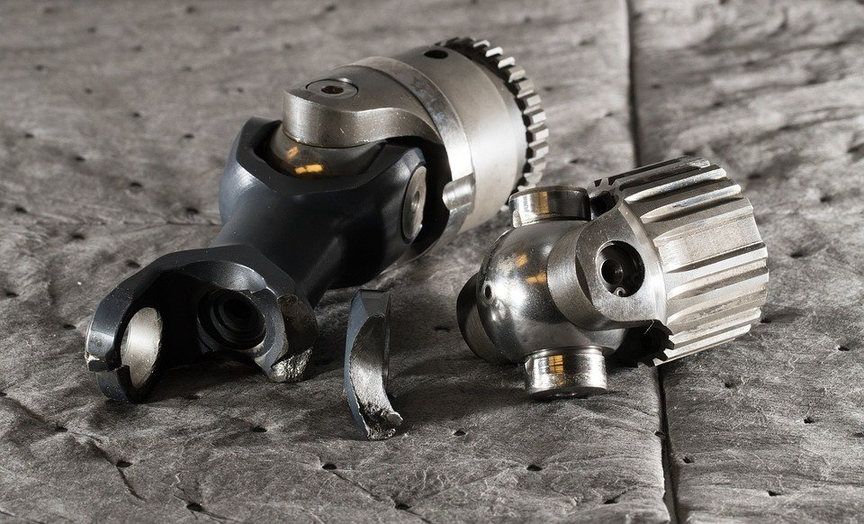
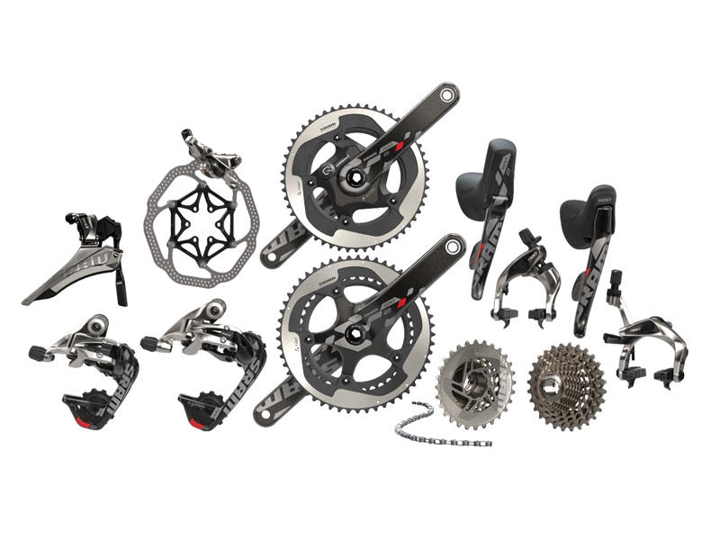
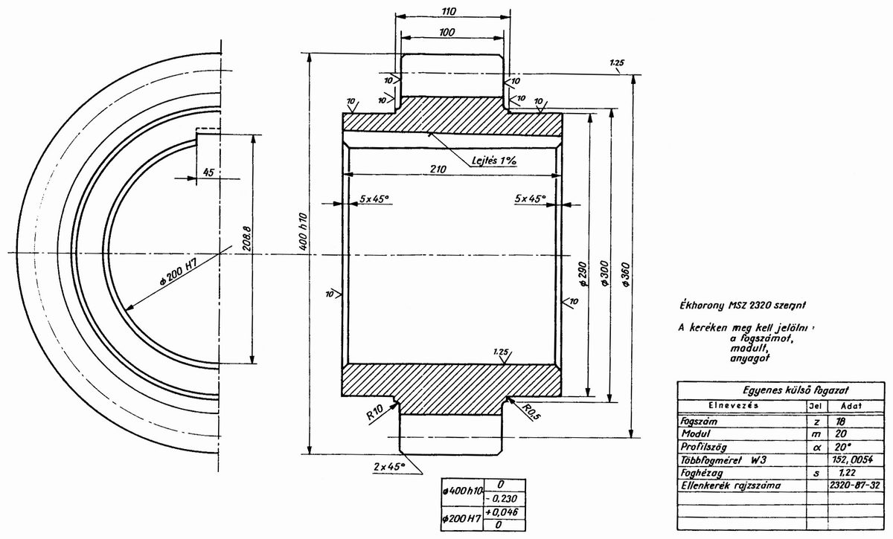

Göntér Erik oldala
Kezdőoldal
Munkáim
Képek
Tervezés
Ezek nem a saját munkáim csak helyfoglalók, ha majd lesz azt jól ideteszem.

Alkatrészek Fogaskerék Fém - Ingyenes fotó a Pixabay-en

KerékpárCity Kerékpár Alkatrész Webshop
Forgatással állítható tekercs, rádióadó készülék hangolásához Wikipédia

Műszaki alapismeretek | Sulinet Tudásbázis